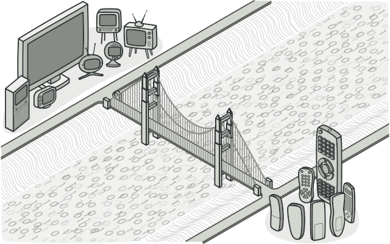

Bridge
The "Bridge" pattern is like a two-level system, or a bridge, for organizing a program's code. It helps separate what an object does from how it does it, allowing both to change without causing issues with each other.
Imagine This:
1. Separation of Responsibilities:
What the object does (abstraction): The main function, like drawing shapes.
How the object does it (implementation): The specific method, such as drawing on a computer screen.
2. Avoiding Excessive Subclasses:
Without the "Bridge" pattern, if you have different combinations of shapes and platforms (like Windows and macOS), you would end up creating a new class for each possible combination, which can become confusing and complicated.
3. Applying the "Bridge":
The pattern separates responsibilities into two distinct hierarchies:
- Shapes (circles, squares).
- Implementations (Windows, macOS).
These hierarchies are connected through a "bridge" that allows you to combine shapes and implementations without creating a class for each combination.
Simple Example:
Without "Bridge":
- You would have classes like `CircleOnWindows`, `CircleOnMac`, `SquareOnWindows`, `SquareOnMac`, and so on.
With "Bridge":
- Create a hierarchy for shapes: `Circle`, `Square`.
- Create a hierarchy for platforms: `WindowsRenderer`, `MacRenderer`.
- Use a "Bridge" class to connect these two hierarchies, such as `ShapeRenderer`, which can draw any shape on any platform.
Benefit:
In summary, the "Bridge" pattern organizes the code so that you can modify or add new features without creating a mess of classes and subclasses.